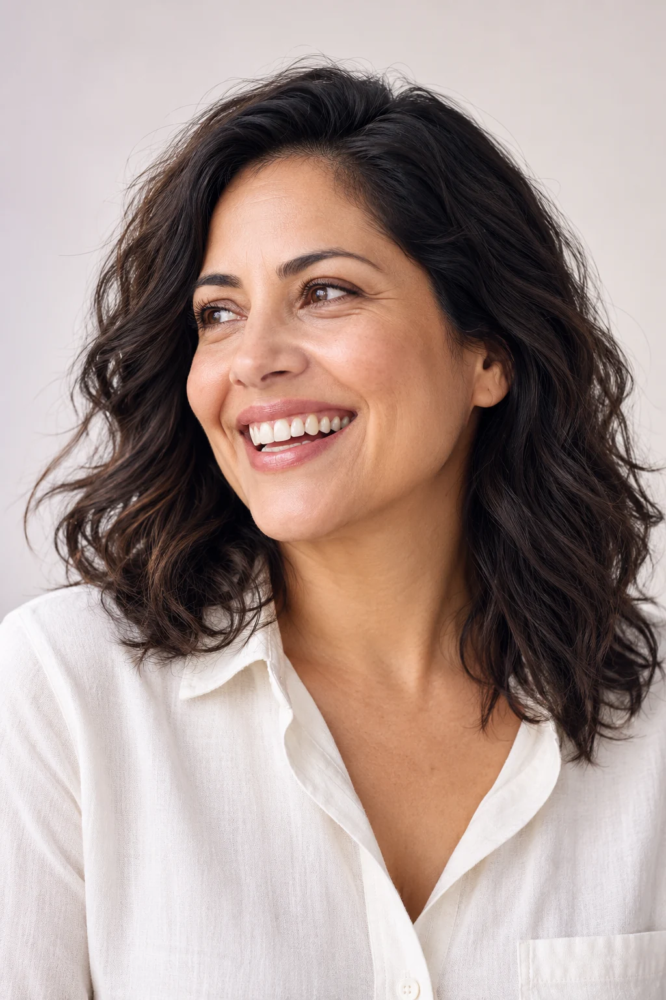
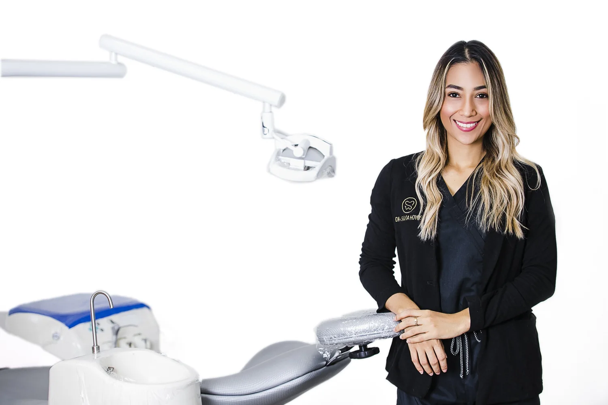
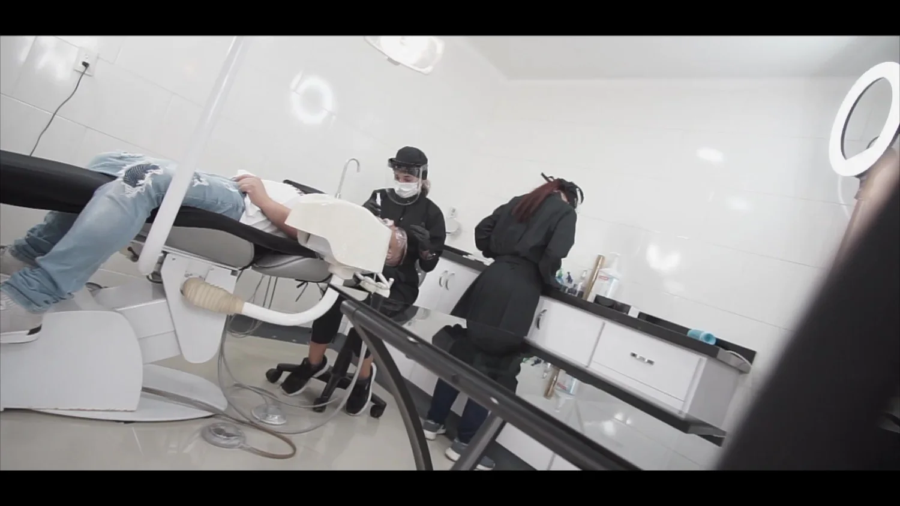
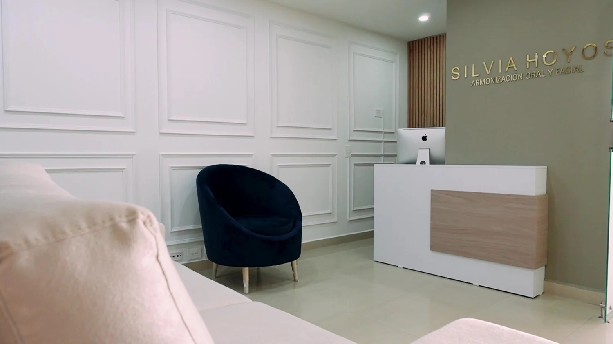

Smile design
A personalised assessment of dental shape, colour and the overall expression.
A thoughtful balance of oral health, aesthetics and your own expression.

Editorial image · Not a patient or treatment result
A graduate in dentistry from Universidad Santo Tomás, Bucaramanga. Her practice brings oral health and aesthetic care into the same conversation.
Explore your care
A personalised assessment of dental shape, colour and the overall expression.
Explore facial-aesthetic options with a professional assessment and realistic expectations.
A broader view of oral function and aesthetics, with the plan explained step by step.

If you live in the USA or Canada, start by asking the practice about the first conversation and the assessment your case may need.
Together with the professional, clarify your goals, the visits and the follow-up. Then decide how the journey fits your life.